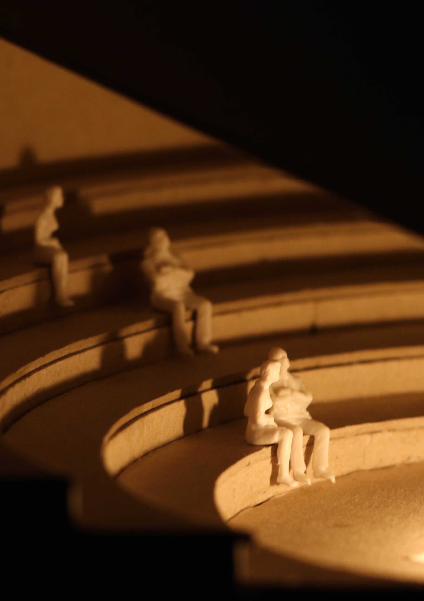
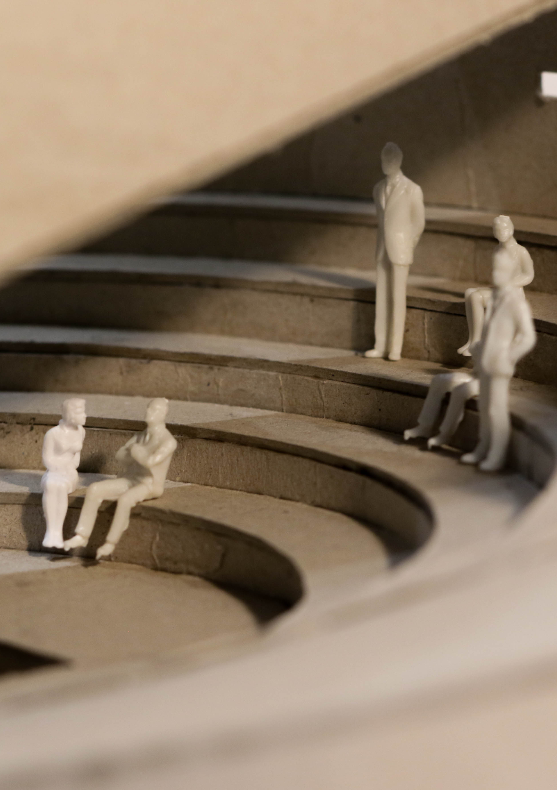
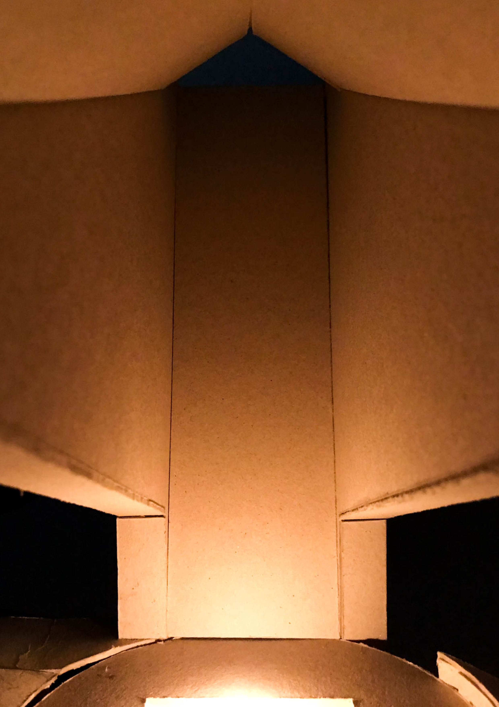
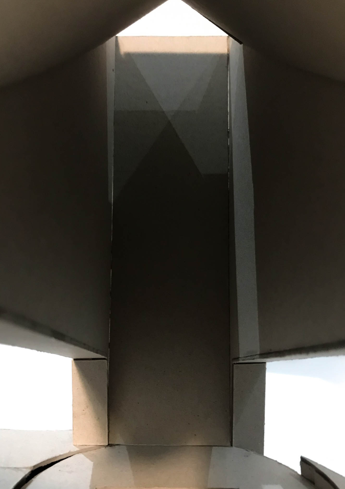

The Hollyoak Centre.
Today our society finds itself racing towards a greater level of automation. Jobs which were previously considered low skilled labour are already fulfilled by automatons, with higher skill level jobs looking join them in the near future. With less jobs being completed by human workers, it begs the question; How will our society look without work?
An issue which could be addressed within the post-work world is our relationship with death. Today, we often neglect our mortality to focus on our working life. When a member of the family passes away, often people struggle to find time to address the process of mourning. This can lead to long term mental health issues.
I propose the Hollyoak Centre. The centre will look to address mortality throughout all stages of life and commemorate life in a slower fashion. This could greatly improve our outlook on life. Instead of fearing or ignoring our end, could we focus on understanding what it means to be alive. A new approach to death should tackle three key areas: Understanding, Ceremony, and Memorial.
A precedent for how we could refresh our understanding of death can be found in The Maggie’s Centre. The Maggie’s centre aids those facing cancer. The centres often orientate around providing palliative care in a non-clinical, homely environment and the creation of a strong, supportive community. Within this environment they provide a plethora of services which focus on lifestyle and mental health. This approach in a post-work world could be accessible to everyone and could aid in building a better relationship with our inevitable end.
From personal experience, the ceremony of a funeral is often rushed in our working world in order that we can get back to our jobs. Often funerals last less than a day and then we rush back of to our lives. I propose a longer ceremony which orientates around forming strong memories as a family. This will achieved through the process of making a memorial. This memorial will be highly personal to the family. These will sit within the landscape of the proposal as a collective.
The proposal will bring together these three elements in a single structure which addresses death and builds a supportive community around it. The structure will focus on a human scale of design which feels warm and organic. The architecture will aim to celebrate the traditional value of landscape in cemeteries, bringing it into the other areas of the program; a poetic hark to the death as a natural process. This will all sit in Rotherhithe, directly opposite Canary Wharf, in opposition of the working worlds approach to death. It will be a beacon for the benefits of a post-work society.